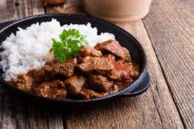

Clerkson
Home
About
Meal 1
Meal 2
☰
Beef Stew and Rice

Ingredients
500g beef stew meat (cubed)
2 tablespoons vegetable oil
1 large onion (chopped)
3 cloves garlic (minced)
2 carrots (sliced)
2 potatoes (cubed)
1 green bell pepper (chopped)
2 tomatoes (chopped or blended)
2 tablespoons tomato paste
2 cups beef broth or water
1 teaspoon paprika
1 teaspoon dried thyme or mixed herbs
Salt and pepper to taste
Fresh coriander or parsley (for garnish)
2 cups cooked white rice (served on the side)
Step-by-Step Instructions
Season beef with salt, pepper, and paprika.
Heat oil in a pot and brown the beef on all sides.
Remove beef, add onions and sauté until soft.
Add garlic and ginger, cook briefly.
Stir in tomatoes and tomato paste, cook until thickened.
Return beef to pot and mix well.
Add carrots, potatoes, and bell pepper.
Pour in broth or water, stir and bring to a boil.
Reduce heat, cover, and simmer until beef is tender (45–60 mins).
Adjust seasoning with salt and herbs.
Garnish with chopped coriander or parsley.
Serve hot with cooked white rice.
Nutritional Information
Calories: ~780 kcal
Protein: ~47g
Carbohydrates: ~55g
Fat: ~35g
Serving Size: 200g cooked rice + 300g beef stew